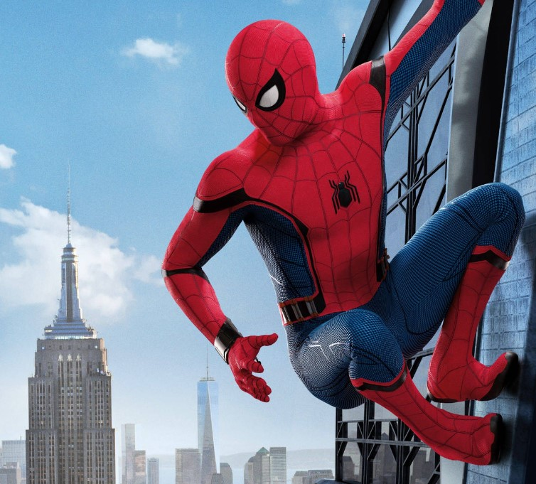
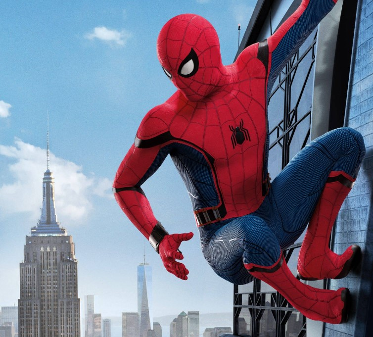

Spider-Man (Peter Parker) is a fictional superhero appearing in Marvel Comics. Created by writer Stan Lee and artist Steve Ditko, he first appeared in Amazing Fantasy #15 in 1962. Known for his agility, wall-crawling abilities, and iconic spider-sense, Spider-Man is one of Marvel’s most popular and influential characters. His stories blend action with themes of responsibility, adolescence, and personal sacrifice, making him a relatable and enduring hero across generations.
Peter Parker is an ordinary teenager from Queens whose life changes after being bitten by a radioactive spider. Gaining superhuman strength, reflexes, and the ability to cling to surfaces, Peter initially uses his powers for personal gain—until a tragic loss teaches him the lesson that defines his entire life: “With great power comes great responsibility.” As Spider-Man, Peter balances school, work, relationships, and financial struggles while fighting villains such as the Green Goblin, Doctor Octopus, and Venom. His intelligence, moral compass, and determination make him a hero both in and out of the costume.
Born in Forest Hills, Queens, New York City, Peter Benjamin Parker's parents died in a plane crash when he was a child. He is raised by his Uncle Ben and Aunt May. While a student at Midtown High School, student Peter Benjamin Parker is an excellent student and scientific prodigy, but he is not popular with his peers. He is bitten by a radioactive spider at a science exhibit and subsequently develops superhuman strength, speed, and agility, as well as the ability to adhere to walls and ceilings. Through his knack for science, he develops a gadget that lets him fire adhesive webbing of his own design through small, wrist-mounted barrels. Initially seeking to capitalize on his new abilities, Parker dons a costume and, as "Spider-Man", becomes a novelty television star. However, he refuses to prevent the escape of a thief, who subsequently murders his beloved Uncle Ben. He tracks down the killer, and, overcome by guilt, devotes himself to applying his powers in the service of justice.
Peter struggles to help his widowed Aunt May pay the rent, has social problems as a student, and continues fighting crime and saving the city as Spider-Man. His heroic deeds engender the editorial wrath of newspaper publisher of the Daily Bugle, J. Jonah Jameson, who holds a grudge against Spider-Man. Peter gets hired as a freelance photographer by Jameson to take pictures of Spider-Man, with him being unaware that Spider-Man is Peter Parker. Spider-Man fights various enemies, including archenemy and nemesis Green Goblin and then Doctor Octopus, Sandman, Chameleon, Lizard, Vulture, Kraven the Hunter, Electro, and Mysterio, defeating them one by one. Peter finds juggling his personal and superhero life difficult.
Peter graduates from high school and enrolls at Empire State University, where he meets roommate and best friend Harry Osborn and girlfriend Gwen Stacy, and Aunt May introduces him to Mary Jane Watson. As Peter deals with Harry's drug problems, and Harry's father, Norman Osborn, is revealed to be the Green Goblin, Peter attempts to give up his costumed identity for a while. Gwen Stacy's father, New York City Police detective Captain George Stacy, is accidentally killed during a battle between Spider-Man and Doctor Octopus. Later, the Green Goblin throws Gwen Stacy from a tower of a major bridge. She dies during Spider-Man's rescue attempt, and Spider-Man swears revenge against his nemesis the Green Goblin, who kills himself accidentally in an ensuing battle with Spider-Man.
Working through his grief, Peter eventually develops tentative feelings toward Mary Jane, and the two become close. A romantic relationship eventually develops, with Parker eventually proposing and being turned down. Peter graduates from college, and becomes involved with the flirtatious costumed thief Felicia Hardy, a.k.a. the Black Cat.
Spider-Man visits an alien planet, where he participates in a battle between Earth's major superheroes and supervillains. On this planet, he discovers a mysterious black alien suit that initially obeys his mental control. The costume eventually reveals itself as an alien symbiote, which Spider-Man rejects after a difficult struggle, though the symbiote returns several times as Venom for revenge. Peter again proposes to Mary Jane and this time she accepts.
Spider-Man appears extensively in comic books, animated series, video games, and films. He stars in numerous comic runs, including The Amazing Spider-Man, Ultimate Spider-Man, and Spectacular Spider-Man, and is a member of teams such as the Avengers and the Fantastic Four. In film adaptations, he has been portrayed by Tobey Maguire, Andrew Garfield, and Tom Holland. He appears throughout the Marvel Cinematic Universe in films such as Spider-Man: Homecoming, Avengers: Infinity War, and Spider-Man: No Way Home, and features prominently in animated projects like Spider-Man: Into the Spider-Verse, which expands the multiversal legacy of the character.